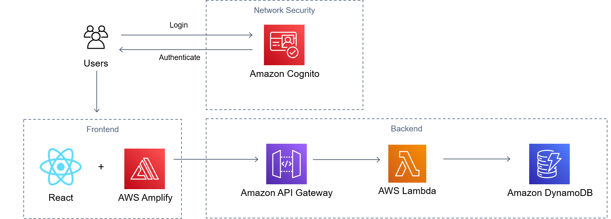

CRM Users
During the research and analysis phase of this project, three system users were identified:
- Marketing and Business Development Manager
- Team Assistant
- Chief Executive Officer
Marketing and Business Development Manager (Manager)
The Manager has been identified as the main user of the CRM. The Manager will be responsible for the upload and maintenance of CRM data as well as assuming responsiblity for the ongoing maintenance of the deployed CRM.
The Manager should have full system administrator privileges and the ability to read and write all CRM records and full function access.
The Manager has a high-level of computer based skills and some experience using commercial CRM products.
Team Assistant (Assistant)
The Assistant will provide CRM data maintenance support. The Assistant will be responsible for updating CRM records as instructed by the Manager.
The Assistant should have read and write privileges for provider information only.
The Assistant has a high-level of computer based skills and little to no experience using commercial CRM products.
Chief Executive Officer (CEO)
The CEO has been identified as an occasional user of the CRM. The CEO has no responsibilites in the maintenance of the CRM. The CEO should have read access to all CRM records and report functions.
Client Considerations and Constraints
During the research and analysis phase of this project a number of key consideration and constraints were identified:
CRM Maintenance Post Deployment
A key consideration during the design phase of the CRM has been providing a solution that will require minimal maintenance once the CRM has been developed and deployed. This has been a key consideration as the Client will be responsible for the ongoing maintenance of the CRM without the assistance of the internal IT Department.
Security Requirements
Internal policy documentation provided by the Client requires the implementation of a range of security measures to protect CRM records which have been deemed to be 'Confidential Data'. These security requirements include the encryption of database data, multi-factor authentication, and user role management protocols.
Costs
The CRM is to be developed as a low budget project with minimal costs incurred for the development and ongoing maintenance of the CRM. This constraint limits project development to open-source or low cost products.
Technical Solution
Development Environment
Modern serverless web technologies were used by the project team during the development of the CRM. Continuous Integration practices were implemented through the use of a shared GitHub Repository and integration with AWS Amplify which built and deployed the code repository on work commit to the main repository.
Development Frameworks
| Type | Details | |
|---|---|---|
 |
Material UI | Popular React UI Framework consisting of prebuilt components which allow the fast development of web applications. |
 |
Frontend Framework | React a JavaScript Framework has been selected to develop the CRM frontend. React provides a component based structure that allows for component reuse making the frontend code base easier to maintain as it grows. |
| AWS Amplify | A pre-configured AWS platform consisting of many of AWS's popular microservices. Amplify allowed the project to be developed in line with CICD principles. | |
| AWS API Gateway | RESTful API which allowed the frontend of the web application to communicate with AWS backend microservices. | |
| AWS Lambda | AWS event driven serverless computing platform, responsible for processing events received on the API Gateway and communicating with the DynamoDB. | |
| AWS DynamoDB | NoSQL data responsible for the persistent data storage requirements of the project. |
Development Methodology
The project was developed utilising a Kanban Agile Project Methodology to track work items in each iteration of the project. The Kanban Methodology is provided the flexibility to allow the group to focus on designing and developing the product, rather than dealing extensively with task management and tracking.